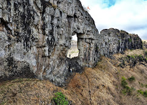
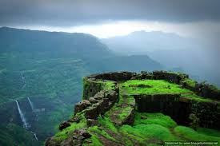

मोहनदरी किल्ला
Location : Click Here For Google Map
- माहिती
- मोहनदरी किल्ला महाराष्ट्र राज्याच्या रायगड जिल्ह्यात स्थित एक ऐतिहासिक किल्ला आहे. हा किल्ला त्याच्या किल्ल्याच्या वास्तुकलेसाठी आणि त्याच्या ऐतिहासिक महत्त्वासाठी प्रसिद्ध आहे. किल्ल्याचे स्थान समुद्र सपाटीपासून उंचीवर असून, येथून सहली करणाऱ्यांना एक सुरेख दृश्य मिळते. किल्ल्याचा आकार छोटा असला तरी त्याचे महत्त्व अद्वितीय आहे.
किल्ल्याची स्थापत्य रचना मजबूत आणि संरक्षित असून, किल्ल्यावर चढायला थोडा कठीण मार्ग असतो. किल्ल्याच्या भिंती आणि बुरुज आजही अस्तित्वात आहेत, तसेच त्या काळच्या लढाईच्या घडामोडींना दर्शवितात. मोहंदर किल्ल्याचा इतिहास, त्याची वास्तुकला आणि निसर्ग सौंदर्य पर्यटकांसाठी एक आकर्षण आहे.
मोहनदरी किल्ल्याचा ऐतिहासिक महत्त्व पर्यटकांनाही खूप आकर्षित करतो. किल्ल्याच्या शिखरावर चढून समोरच्या निसर्गाचे आणि आसपासच्या परिसराचे दृश्ये पाहणे एक अद्वितीय अनुभव आहे.
Explore the historical beauty

